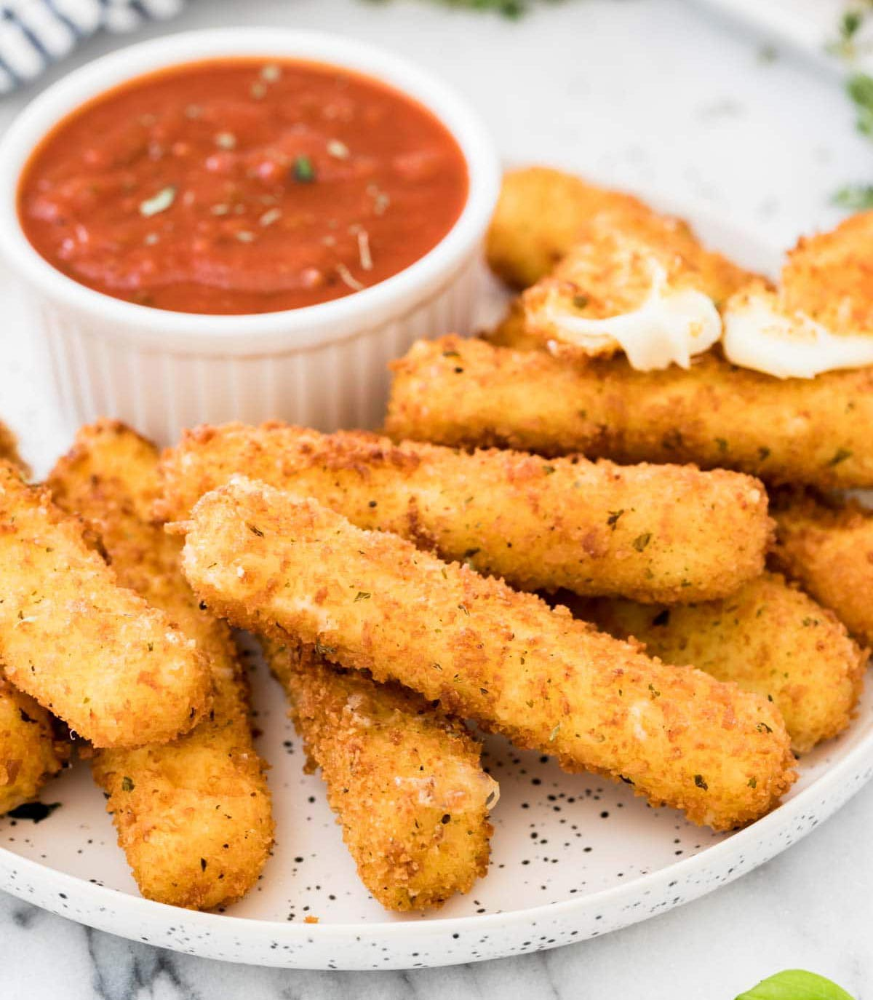

Mozzarella Sticks
For those craving mozzarella sticks -- they’re actually super easy to make!

Image by: Sam Merritt
Ingredients:
- Mozzarella (sticks or block)
- Panko bread crumbs
- 2-4 eggs
- Italian seasoning
- Salt
- Flour
- Vegetable oil
Directions:
- In separate bowls, pour in your panko, flour, and eggs
- Whisk the eggs, and lightly season the panko and flour with Italian seasoning
- For those with a mozzarella block, cut into about one-inch thick pieces -- however many you’d like to make!
- Dip your mozzarella in the flour, eggs, then the panko.
- Repeat, double dipping them to ensure the sticks are thickly coated (or else the cheese will completely melt out!)
- Place on a baking sheet and place your sticks in the freezer. If you don’t plan on frying them right away, place them in a sealed, freezer-safe container
- In a large pan with some depth, pour in your vegetable oil (enough to coat half a mozzarella stick) and wait until it’s hot enough to fry (I typically wait until it starts to bubble).
- Once your oil is hot and ready, take your mozzarella sticks out the freezer and place them in the oil.
- Fry each side until golden brown.
- Remove any excess oil with a paper towel on a plate (the simplest way), or a rack if you have one
- Enjoy!
Table of Contents
Recipes